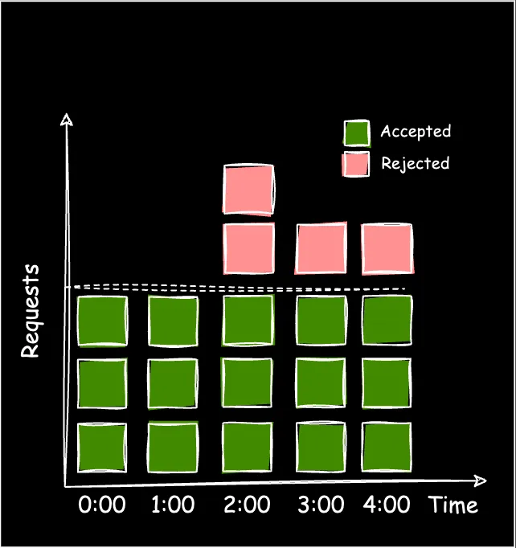
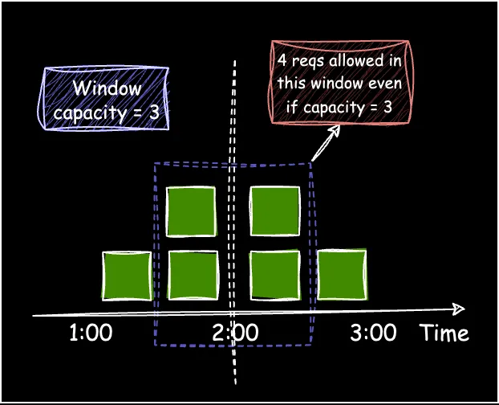
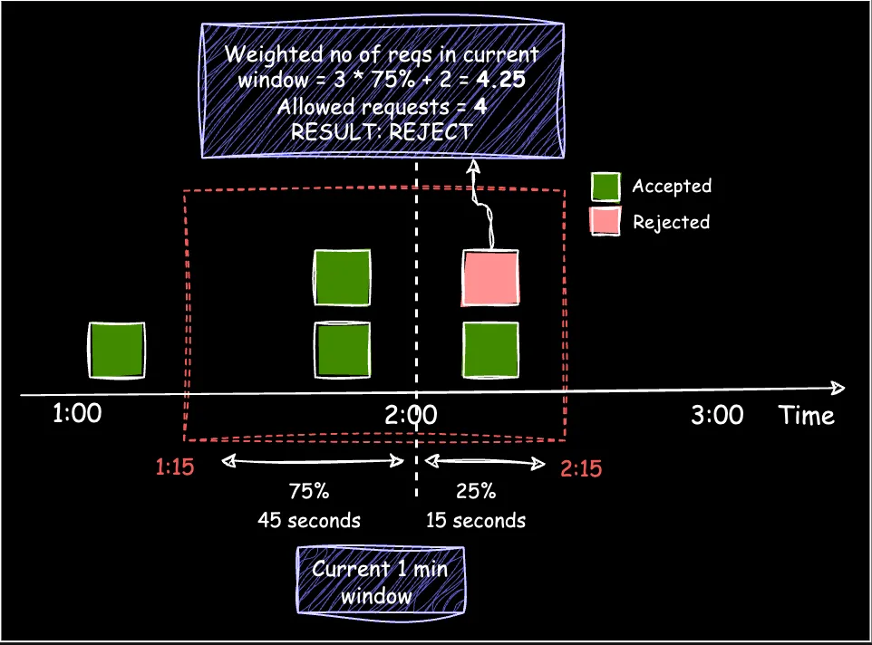
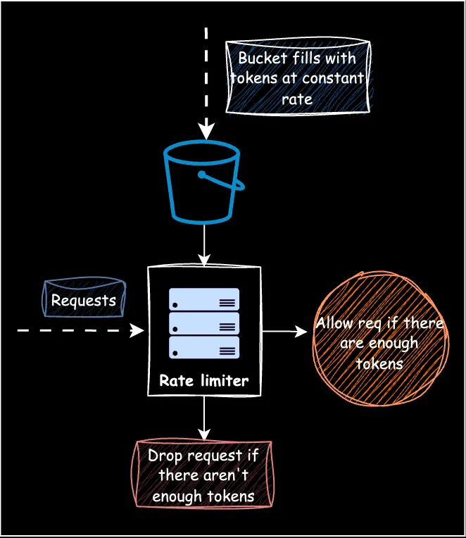
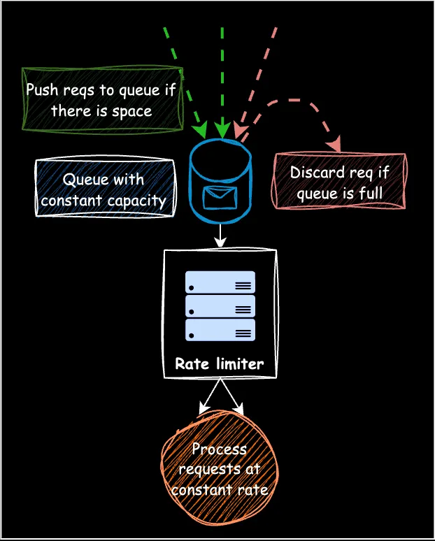

System Design Mastery
Master scalable systems with premium insights
🔢 Rate Limiting Algorithms — Controlling Request Flow
Rate limiting algorithms control how many requests a user/client can make in a given time.
1️⃣ Fixed Window Counter
Idea
Count requests in a fixed time window
How does Fixed Window Counter work?
- Stores the number of requests in the current window and limits them (eg: 100 requests per minute).
- When a new request arrives, it's either accepted or rejected, depending on whether the current window can accommodate it.

Fixed Window Counter Algorithm
Example
- Window: 1 minute
- Limit: 5 requests
12:00 → 5 requests allowed
12:01 → reset
Problem
12:00:59 → 5 requests
12:01:00 → 5 requests
👉 10 requests in 1 second ❌ (burst issue)

Burst Problem in Fixed Window Counter
One-Line
Fixed Window → Simple counting in fixed intervals
2️⃣ Sliding Window Log
Idea
Store timestamps of requests and check last N seconds
Example
Allow 5 requests in last 60 seconds
System checks exact timestamps.
🚦 Scenario
- 👉 Limit = 5 requests per 10 seconds
- 👉 User sends requests at these times: t = 1, 2, 3, 4, 5, 6, 7 sec
At t = 6 :
Requests in last 10 sec = [1,2,3,4,5,6]
→ 6 requests → ❌ reject
At t = 11 : Request
Valid window = 1–11 sec
Remove t=1
Now [2,3,4,5,11]
→ 5 requests → ✅ allow
Advantages
- ✔ Accurate
- ✔ No burst problem
Disadvantages
- ❌ High memory (stores logs)
One-Line
Sliding Log → Exact tracking using request timestamps
🔥 3️⃣ Sliding Window Counter
Idea
Hybrid of fixed window + sliding window log
Uses:
- Current window
- Previous window
Requests = (current window + previous window * weight)
How does Sliding Window Counter work?
- This approach combines Fixed Window Counter and Sliding Window Log algorithms.
- Instead of recording every request timestamp, only the total number of requests in the previous fixed window is logged.
- When a new request arrives, the "weighted number of requests" for the current window is calculated.
Example (Figure 7):
- Assume Window size: 1 min
- Window capacity: 4 requests/min
- A new request arrives at t=2:15
The current window (1:15 - 2:15) consists of:
- 75% of the previous window (1:15 - 2:00)
- 25% of the current window (2:00 - 2:15)
Instead of tracking all timestamps, only the request count in the previous fixed window is logged.
The "weighted number of requests" is calculated as:
requestsInCurrentWindow + (weight * requestsInPreviousWindow)
= 2 + (0.75 * 3)
= 4.25
Since adding the new request would bring the total to 4.25 (exceeding the limit of 4), the request is rejected.

Figure 7: Sliding Window Counter
Advantages
- ✔ Less memory
- ✔ More accurate than fixed
One-Line
Sliding Counter → Approximate sliding window using weights
🔥 4️⃣ Token Bucket
Idea
- You have a bucket with tokens
- Tokens are added over time
- Each request consumes 1 token
Idea:
- Request allowed if token exists
- Otherwise rejected

Token Bucket Algorithm
Example
- Bucket size = 5 tokens
- Refill rate = 1 token/sec
At start: Tokens = 5
Requests:
- t=1 → Remaining token for next step = 4 ✅
- t=2 → Remaining token for next step = 3 ✅
- t=3 → Remaining token for next step = 2 ✅
- t=4 → Remaining token for next step = 1 ✅
- t=5 → Remaining token for next step = 0 ✅
- t=6 → no token ❌ reject
At t=7:
1 token added → request allowed ✅
Why It's Powerful
👉 You can allow bursts
Example:
- Bucket has 5 tokens
- User can send 5 requests instantly
- Then wait for refill
🧠 Real Life Analogy
Think of mobile data
- You get data daily
- You can use it anytime
- If exhausted → wait for next day
Advantages
- ✔ Allows bursts
- ✔ Smooth traffic
One-Line
Token Bucket → Allows bursts with controlled refill rate
🔥 5️⃣ Leaky Bucket
How does Leaky Bucket work?
- Requests are added to a fixed-size queue and processed at a steady rate.
- Requests are discarded if the queue is full.
Flow
Incoming requests → Queue → Processed steadily

Leaky Bucket Algorithm
Example
- Incoming → 10 requests/sec
- Processing → 2 requests/sec
- Queue fills → extra requests dropped
🪣 Visualization
Bucket with hole
- Water enters fast
- Water leaks slowly
Advantages
- ✔ Smooth output rate
- ✔ Prevents bursts
Disadvantages
- ❌ Drops extra requests
One-Line
Leaky Bucket → Smooths traffic by processing at fixed rate
🔥 Comparison Table
| Algorithm | Burst Handling | Accuracy | Memory |
|---|---|---|---|
| Fixed Window | ❌ Poor | Low | Low |
| Sliding Log | ✔ Best | High | High |
| Sliding Counter | ✔ Good | Medium | Medium |
| Token Bucket | ✔ Yes | High | Low |
| Leaky Bucket | ❌ No | Medium | Low |
🎯 Interview Tip (Very Important)
If interviewer asks:
👉 "Which one do you use?"
Answer:
- Token Bucket → most practical
- Sliding Window Counter → good balance
- Sliding Log → high precision but costly